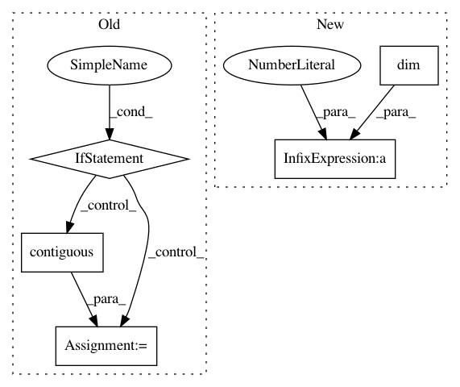

c517e0b8b34a85b8142b4669c152b6e62c02d8e2,gpytorch/lazy/lazy_tensor.py,LazyTensor,zero_mean_mvn_samples,#LazyTensor#Any#,1260
Before Change
else:
covar_root = self.root_decomposition().root
if self.ndimension() == 3:
base_samples = torch.randn(
self.size(0), covar_root.size(-1), num_samples, dtype=self.dtype, device=self.device
)
samples = covar_root.matmul(base_samples).permute(2, 0, 1).contiguous()
else:
base_samples = torch.randn(covar_root.size(-1), num_samples, dtype=self.dtype, device=self.device)
samples = covar_root.matmul(base_samples).permute(1, 0).contiguous()
return samples
def __add__(self, other):
After Change
base_samples = torch.randn(
*self.batch_shape, covar_root.size(-1), num_samples, dtype=self.dtype, device=self.device
)
samples = covar_root.matmul(base_samples).permute(-1, *range(self.dim() - 1)).contiguous()
return samples
In pattern: SUPERPATTERN
Frequency: 3
Non-data size: 5
Instances
Project Name: cornellius-gp/gpytorch
Commit Name: c517e0b8b34a85b8142b4669c152b6e62c02d8e2
Time: 2019-03-18
Author: gpleiss@gmail.com
File Name: gpytorch/lazy/lazy_tensor.py
Class Name: LazyTensor
Method Name: zero_mean_mvn_samples
Project Name: cornellius-gp/gpytorch
Commit Name: 4c6458b841bb49610b5cf6b9fbab94df5cad85ee
Time: 2019-01-23
Author: gpleiss@gmail.com
File Name: gpytorch/lazy/interpolated_lazy_tensor.py
Class Name: InterpolatedLazyTensor
Method Name: zero_mean_mvn_samples
Project Name: cornellius-gp/gpytorch
Commit Name: 784d00f0c38fb5fd77aed0a6dffb93cc98a0c990
Time: 2019-01-29
Author: gpleiss@gmail.com
File Name: gpytorch/likelihoods/gaussian_likelihood.py
Class Name: GaussianLikelihood
Method Name: pyro_sample_y